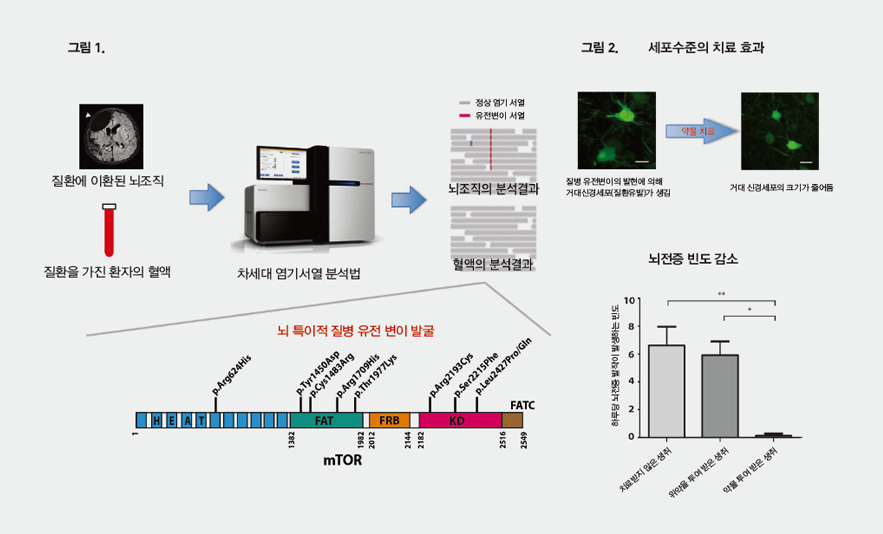

주제별 연구성과
주제별 연구성과
KAIST RESEARCH ACHIEVEMENTS
난치성 뇌전증(간질)도
치료가 가능하다
외과학대학원 이정호
요약
난치성 뇌전증(간질)은 전체 뇌전증의 20-30%를 차지하며 기존 항간질 약물에 치료가 되지 않는 질환이다. 본 연구는 약물로 치료가 되지 않으며 그 원인을 전혀 알 수 없었던 국소 대뇌 피질 이형성증에 의한 난치성 뇌전증 환자 77명(한국인 환자)의 뇌 유전체 정보와 임상 자료를 심층 분석하였다. 그 결과 약 16%환자에서 뇌에만 따로 mTOR 유전자에 돌연 변이가 존재하고 나머지 신체 부위는 정상인 것이 발견되었다. 한 걸음 더 나아가, 본 연구는 뇌 특이적 mTOR 돌연 변이를 갖는 생쥐를 제작한 후 유전 변이에 따른 맞춤형 치료법 개발에 성공하였다. 이번 연구는 약물로 조절 되지 않는 뇌전증의 원인을 새롭게 이해하고 혁신적 약물 치료법 개발의 발판을 마련하였으며 현재 다국적 제약회사와 환자 임상 시험 진행 중에 있다.
연구내용
뇌전증(간질)은 전세계 5천 만명이 이상이 앓고 있는 뇌질환이다. 난치성 뇌전증은 약물로 조절이 되지 않는 뇌전증을 말하며 전체 뇌전증 환자의 20-30%를 차지하고 있다. 약물로 조절되지 않는 발작은 영구적 정신 지체 및 발달 장애를 유발하고 심지어 발작에 의해 사망까지 이를 수 있어, 발작을 유발하는 뇌 부위를 절제하는 뇌전증 수술이 이루어지고 있다. 난치성 뇌전증을 유발하는 가장 흔한 원인으로서 뇌 발달 장애의 일종인 국소 대뇌 피질 이형성증이 알려져 있다. 그러나 이 질환의 정확한 원인 및 발병 기전이 알려져 있지 않아 질병의 이해를 통한 새로운 약물치료법 개발이 어려웠다.
본 연구팀은 세브란스 병원과 공동 연구를 통하여 한국인 대뇌 피질 이형성증 환자 77명의 뇌 DNA 와 혈액 혹은 침 DNA를 임상 자료와 비교 분석하였다. 그 결과 16% 환자에서 혈액과 침 DNA에는 존재하지 않는 질병 유전 변이가 뇌 특이적으로 존재하는 것이 발견되었다. 특히 연구팀은 차세대 염기 서열 분석법을 응용한 딥 시퀀싱 방법을 이용하여 적출된 뇌 조직 안에 1% 정도 존재하는 소량의 질병 유전 변이까지 찾아 내었다. 또한 발견된 질병 유전변이는 모두 MTOR 유전자에 존재하였으며 MTOR 단백기능을 활성화 시키는 것을 세포와 환자 뇌조직에서 증명하였다. 연구팀은 한걸음 더 나아가 환자에서 발견된 유전 변이를 생쥐 뇌에 구현하여 이것이 난치성 뇌전증을 직접적으로 유도함을 증명하였으며, 기존에 임상에서 항암제로 사용되고 있는 MTOR 억제제를 이용하여('Drug-repositioning') 난치성 뇌전증을 치료하는 맞춤형 치료법을 제시하였다. 이번 연구는 수술적 치료만이 유일한 대안이 였던 난치성 뇌전증의 원인을 새롭게 이해하고 혁신적 약물 치료법 개발의 발판을 마련한 기념비적 연구로 평가 받고 있다.

그림 1. 차세대 염기서열 분석법을 이용한 뇌특이적 질병유전변이의
발굴 국소 대뇌 피질 이형성증에 의한 난치성 뇌전증 환자의 뇌조직과
혈액샘플에서 얻은 DNA를 차세대 염기서열 분석법으로 비교분석하여
뇌 특이적 질병 유전 변이를 그림 2. 질병 유전변이를 발현하는 생쥐
뇌조직 단면에서 환자와 같은 거대신경세포가 관찰되었으며 약물치료를 통해 거대신경세포가 정상세포로 변화하고 뇌전증의 빈도가 감소하였다
본 연구는 뇌 특이적으로 발생하는 소량의 체성 유전변이 만으로도 난치성 뇌질환을 일으킬 수 있다는 새로운 뇌 질환 발생 개념을 제시하였다. 또한 본 연구에 사용된 약물은 이미 임상에서 다른 질환의 치료 약물로 사용되고 있어 빠른 시일내에 난치성 뇌전증 환자 치료에 적용 가능할 것으로 보인다.현재 계획 중인 글로벌 제약회사와 임상 시험이 잘 진행된다면, 전 세계 백만명 이상의 국소 대뇌 피질 이형성증 관련 난치성 뇌전증 환자치료가 가능할 것으로 기대된다.
연구비지원
ㆍ보건복지부 보건의료기술연구개발사업
ㆍ미래부 뇌연구 프로그램(한국연구재단)
ㆍKAIST 시스템 헬스 케어
ㆍKAIST 이원 조교수
연구실적
ㆍ논문 : Brain somatic mutations in MTOR cause focal cortical dysplasia type II leading to intractable epilepsy, Nature Medicine, 21(4), 395-400(Apr. 2015)
ㆍ특허 : 국내 특허 등록 1건, 해외 특허 출원 2건, 국내 특허 출원 5건
ㆍ현재 글로벌 제약회사와 임상 시험 및 유전체 공동 연구를 협의 중에 있음
ㆍMBC, KBS 뉴스 보도 등 언론 보도 27회